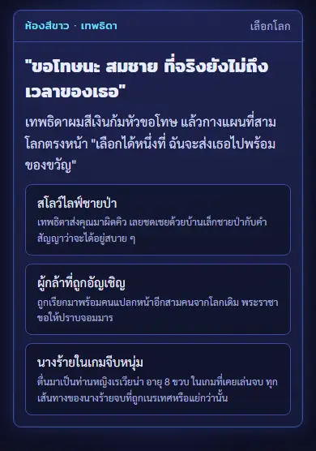
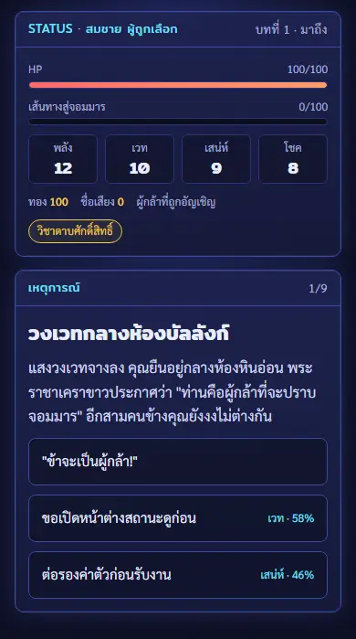

เล่นได้แล้วตอนนี้ต่างโลกเป็นเกมสั้นแยกต่างหาก เล่นจบได้ในไม่กี่นาที
กำลังทำกำลังย้ายเข้าเกมหลักเป็นโลกที่สอง เป็นชีวิตเต็มตั้งแต่เกิดจนตาย ลำดับและรายละเอียดอาจเปลี่ยนได้
เล่นเกมสั้นต่างโลก →เล่นได้แล้วเกมสั้นต่างโลก
- เริ่มจากชีวิตเดิมที่จบลงก่อนเวลา เทพธิดาต่างโลกมาขอโทษ แล้วให้เลือกเกิดใหม่
- เลือกบทบาท: ผู้กล้าที่ถูกอัญเชิญ · ลูกขุนนางบ้านนอก · เกิดเป็นสไลม์ · นางร้ายในเกมจีบหนุ่ม · สโลว์ไลฟ์ชายป่า
- รับสกิลโกงจากเทพธิดาหนึ่งอย่าง เช่น ประเมินค่า กล่องมิติ ฝีมือครัวจากโลกเดิม
- เล่นเป็นการ์ดทีละใบ ตอนจบที่เคยได้เก็บไว้ในสมุดตอนจบในเบราว์เซอร์เครื่องนี้


กำลังทำต่างโลกในเกมหลัก
ระบบที่เจ้าของเกมตัดสินแล้ว แต่ยังไม่เข้าเกม
ทางเข้า
- ทางเกิดที่ 3 ที่ปรโลก เลือกไปต่างโลกได้ทุกครั้งหลังตาย
- เทพธิดาต่างโลกโผล่มาเอง ทำบุญมากโผล่บ่อยกว่า และถ้าโผล่จะได้ของแถมติดตัวไป
- เรื่องหายากในชีวิตไทยที่พาไปต่างโลก เช่น วงเวทหรือประตูปริศนา ตายตอนช่วยคน หลับแล้วไม่ตื่น และรถบรรทุกที่เล่าเป็นมุก · หายตัวไปก็ยังมีงานศพให้คนข้างหลัง
เกิดในต่างโลก
- เทพธิดายื่นบทบาทให้เลือก 3 ใบ มีคนธรรมดาที่มีอาชีพ 1 ใบเสมอ กรรมจากชาติก่อนทำให้บทบาทที่สุ่มได้เอียงดีหรือร้าย
- เลือกสกิลโกง 1 จาก 3 แผ่น
- ค่าสถานะชุดของต่างโลก: HP · พลัง · เวท · เสน่ห์ · โชค ดูได้จากหน้าต่างสถานะของตัวเอง ดูของคนอื่นได้เมื่อมีสกิลประเมินค่า
ชีวิตในต่างโลก
- แนวเล่นต่างจากชาติไทยชัด: เวลาเดินเอง แต่ละช่วงวัยเลือกสิ่งที่จะทุ่มเท แล้วมีจดหมายเหตุบันทึกเรื่องที่เกิด
- กิลด์นักผจญภัย ไต่แรงค์จาก F ถึง S · บอร์ดเควสให้เลือก เควสบังคับตอนเมืองมีภัย และเควสที่โผล่เอง
- ทุกอย่างที่ทำได้ EXP เลเวลขึ้นได้แต้มไปเรียนสกิล · สกิลมาได้จากการฝึกซ้ำ แต้มเลเวล และสกิลต้องสาปจากกรรม
- ไอเทม 4 ช่อง มีของแฟนตาซีปนของคติไทย เช่น ตะกรุด พระเครื่อง มงคล ยาหม่อง
- ความรู้จากโลกเดิม 9 หมวด (อาหาร เกษตร แพทย์ การค้า ช่าง การพิมพ์ ทหาร การเมือง บันเทิง) เปิดทางลัดได้ ใช้แล้วล้มเหลวได้ ความรู้อันตรายอย่างดินปืนเล่าเป็นผลโดยไม่มีสูตร
- ชื่อเสียงเป็นอีกแกนหนึ่ง เปิดเรื่องใหม่ เปลี่ยนราคาในร้าน และโลกจำเป็นตำนาน ดังทางร้ายก็ถูกจำเป็นคนร้าย
- โลกผสมทุกยุค 8 ภูมิภาคขึ้นไป รวมภูมิภาคแบบอยุธยาหนึ่งแห่ง
บุญบาปและการกลับบ้าน
บุญต่างโลก
ช่วยผู้อ่อนแอ · ให้ทาน · รักษาสัญญา · สู้ปกป้อง
ช่วยผู้อ่อนแอ · ให้ทาน · รักษาสัญญา · สู้ปกป้อง
บาปต่างโลก
ฆ่าเกินเหตุ · เอาเปรียบด้วยสกิลโกง · ความรู้อันตราย · ทรยศ
ฆ่าเกินเหตุ · เอาเปรียบด้วยสกิลโกง · ความรู้อันตราย · ทรยศ
- ฆ่ามอนสเตอร์ดูที่เจตนา ปกป้องเมืองได้บุญเล็ก ล่าเก็บแต้มหรือล่าเผ่าที่ไม่ได้ทำร้ายใครเป็นบาป
- บัญชีบุญบาปเป็นบัญชีเดียวของดวงวิญญาณ ไปต่างโลกก็พกกรรมไปด้วยแบบเดียวกับเกิดใหม่ ต่างโลกจึงไม่ใช่ทางล้างบาป · บัญชียังซ่อนและเฉลยที่ปรโลกที่เดียวเหมือนเดิม
- ตายในต่างโลกแล้วกลับมาปรโลกเดิม ปรโลกตัดสินจากชาติต่างโลก แล้วการ์ดทางเกิดให้เลือกกลับโลกเดิมตามกรรม หรืออยู่ต่างโลกต่อ (อยู่ติดกันได้จำนวนชาติจำกัด)
- อยู่ต่อ: เลือกทายาทจาก 3 คนที่ลักษณะสุ่ม แล้วส่งไอเทมต่อได้ 1 ชิ้น · โลกจำชาติก่อนตรงตามจริง
- กลับโลกเดิมได้ 4 อย่าง: กรรมกับแถวในผังตระกูล · ของที่ระลึก 1 ชิ้นเป็นของตระกูล · ทองแปลงเป็นเงินตั้งต้นส่วนเล็ก ๆ · ตำนานที่ครอบครัวเล่าต่อ
- เงินต่างโลกเป็นเหรียญทองแดง เงิน ทอง เรียกชื่อแบบไทยโบราณ
นอกคัมภีร์ที่มาของต่างโลก
- ต่างโลกทั้งหมดเป็นของเกม ไม่ได้มาจากคติไทยหรือไตรภูมิ ได้แรงบันดาลใจจากแนวเรื่องเกิดใหม่ในต่างโลกของนิยายและการ์ตูนญี่ปุ่น
- ไม่มีข้อมูลจริงในต่างโลก ไม่มีตารางชีพ เงินเฟ้อ หรือเหตุการณ์บ้านเมือง
- กำลังทำต่างโลกในเกมหลักจะไม่มีเรื่องทาส การใส่ร้ายทางเพศ หรือฮาเร็ม ฉากตลาดในเกมสั้นจะเปลี่ยนตอนย้ายเข้าเกมหลัก